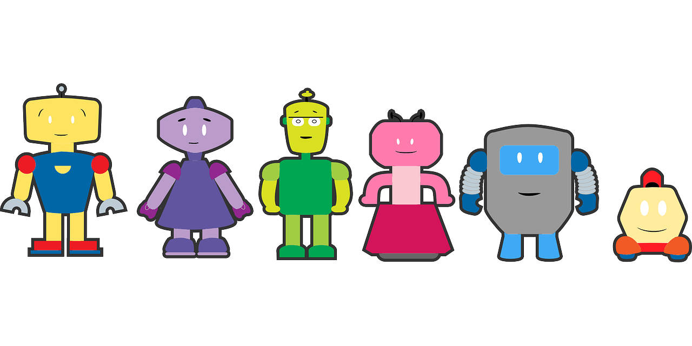

There are a multitude of ways that we humans interact with our technology today. Simply looking through the history of human to computer input and output devices will show that we have continually iterated and improved how we interact with computers. Inspiration for some of these human to computer interactions is believed to be drawn directly from science fiction; including Artificial Intelligence (AI), smart phones, video conferencing and smart watches. (Jordan, et al., 2018) The ability to use your native language to speak to a computer is becoming more common; Currently we use our voice to dictate to our phones, issue commands to our smart homes, respond to telephone computer agents and retrieve our voicemail. The ability to speak commands using language Years ago, natural language input would have seemed like something out of science fiction, but now its very common in our daily lives because it requires no training and is intuitive.
The topic of artificial intelligence often appears while considering the possible future implementations of natural-language user interfaces. As we explore the possible opportunities that will arise from the development of this technology we see natural language user interfaces will be used in a multitude of ways, across a varying platforms. The technology driving smart assistants such as Google Assistant, Siri, and Alexa will continue to develop as well as autonomous systems comprised of physical technology paired with software in robotics. (Gouette & Zhu, 2020)
The use of robots whether tangible or intangible will continue to be developed and possibly even designed with human emotions to offer a multitude of task-based assistance and customer service. (Wirtz, et al., 2018) The idea of having a robot processing your purchase at the grocery store, answering your telephone query does not seem too farfetched considering we currently ask our phones to take notes for us.
The places that natural language user interfaces will go are limited only by our imagination. Imagine a world where a child with questions about homework could get help by simply asking for it, or a nurse could easily complete the charting for their patients so that they have more time to spend caring for their needs. As we continue to develop and streamline natural language user interfaces, we will speed up the rate at which we can accomplish many tasks, giving us more time for things that are important, but placed in a lower priority.

Image by OpenClipart-Vectors (n.d.) from Pixabay
thanks to W3C for tutorial and adapted code from Style Examples
also thanks to WDN for HTML and CSS resources and any adapted code snippets from Mozilla Developer Network